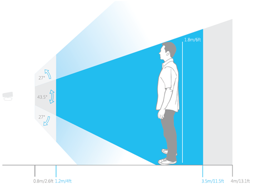
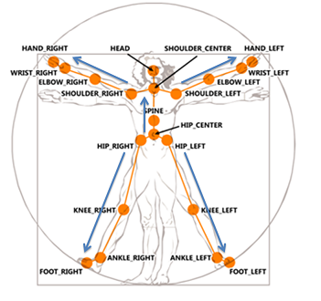
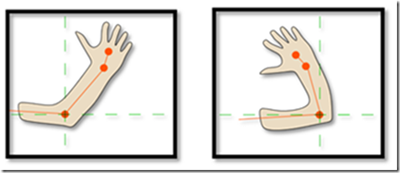
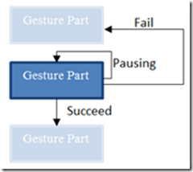
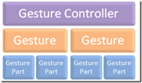
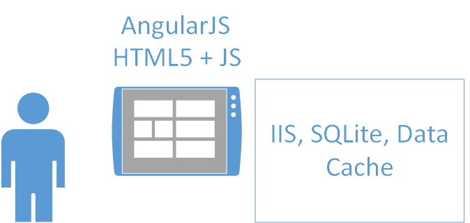
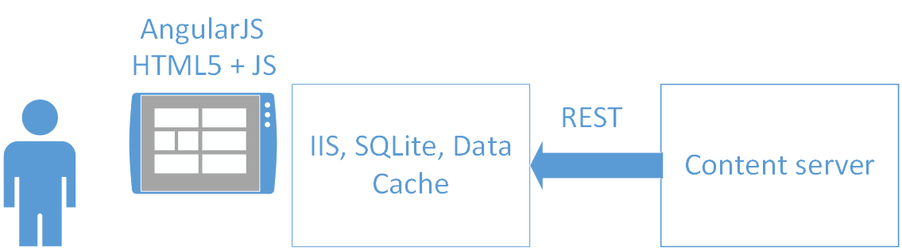
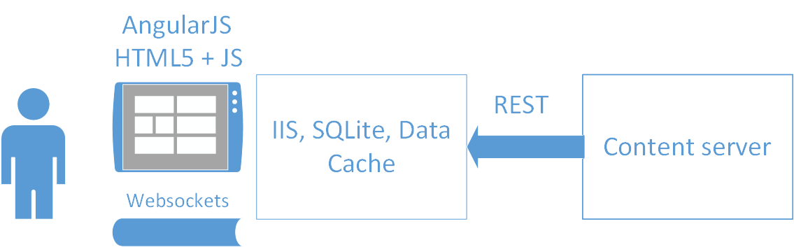

AngularJS + Kinect
Часть 2
Ivan Novikov
Кто я?

Ivan Novikov
Software developer

Интерактивные приложения с Kinect-управлением
Kinect for Windows!
История Kinect
История Kinect
Представлен 1 июня 2009 года Разработано в 2010.
Вышел для консоли 4 ноября 2010 года в США.
Приз "самое инновационное техническое устройство" в 2011 году.
Поставки версии для Windows были начаты 1 февраля 2012 года.
Интерация с пользователем
Обнаружение пользователей
Обнаружение пользователей
Обработка данных сенсором
Обработка движений и жестов
Модуль распознавания
Базовый алгоритм
Непрерывный анализ
Модуль распознавания
Отслеживание состояний скелета

Базовый алгоритм
Отслеживание состояний скелета
 
Непрерывный анализ
Получение физических параметров (дистанция, скорость)
Анализ текущей позиции (стоячая поза, сидячая)
Калибровка
Архитектура приложений с Kinect управлением
Архитектура приложения

Архитектура приложения

Архитектура приложения

Собираем воедино
// script.js
(function() {
angular.module('helloApp', [])
.controller('hello', function ($scope, kinectservice) {
$scope.message = 'AngularJS!';
kinectservice.promoteButtons();
$scope.onClick = function() {
$scope.message = 'AngularJS + Kinect!';
}
});
})();
// index.html
<html ng-app="helloApp">
<body ng-controller="hello">
<span class='kinect-button' ng-click='onClick()'>Hello {{message}}</span>
</body>
</html>
Продолжение следует
Реализация больших SPA приложений
Продвинутые анимации с помощью JS и CSS
и еще много всего...